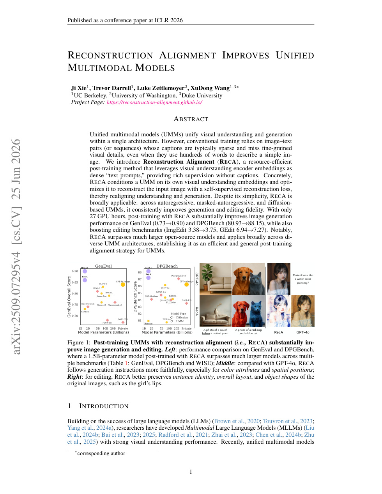
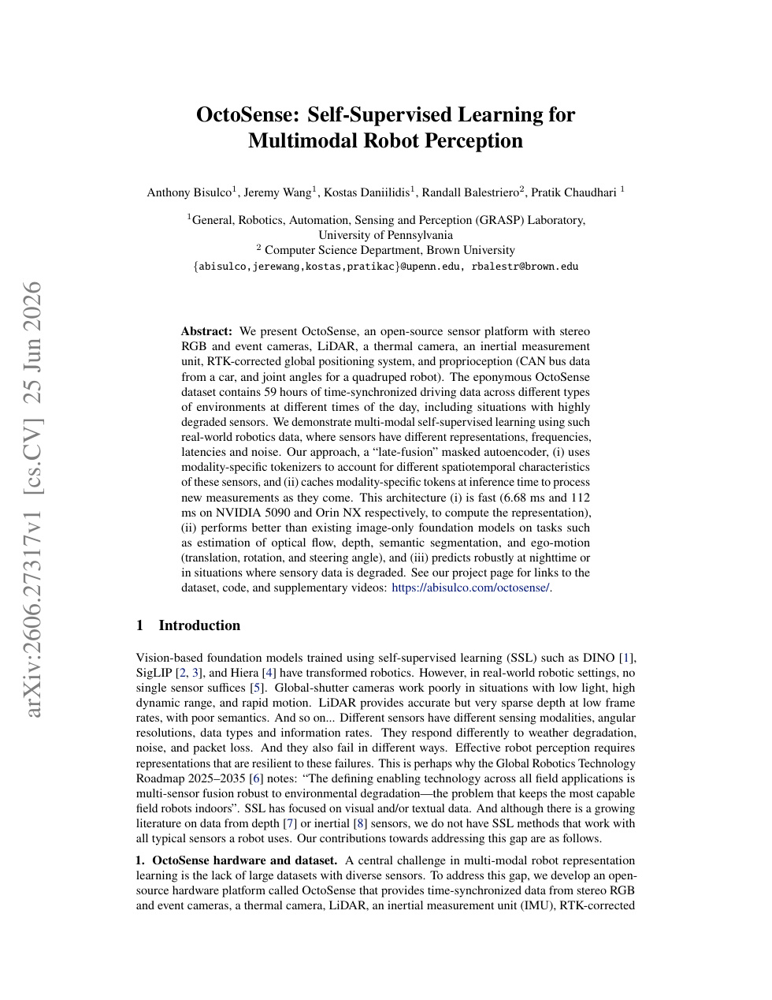
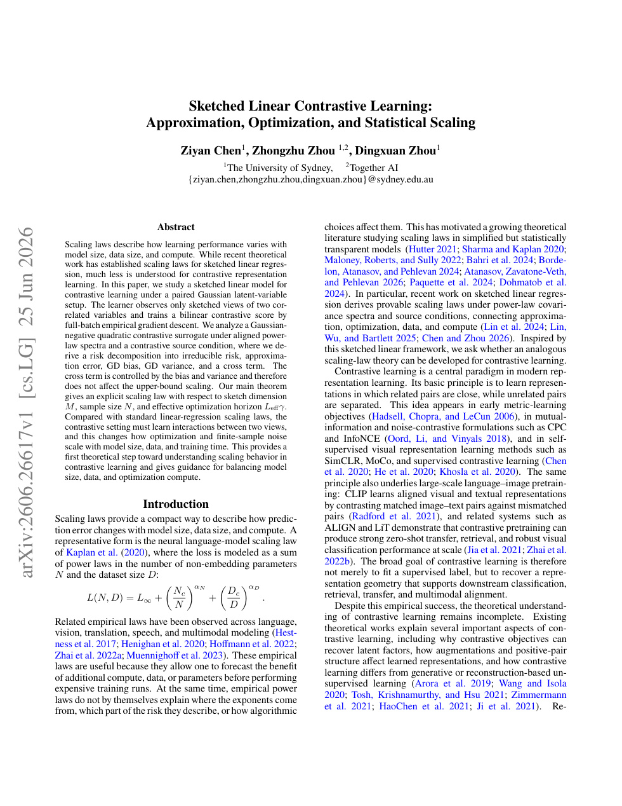
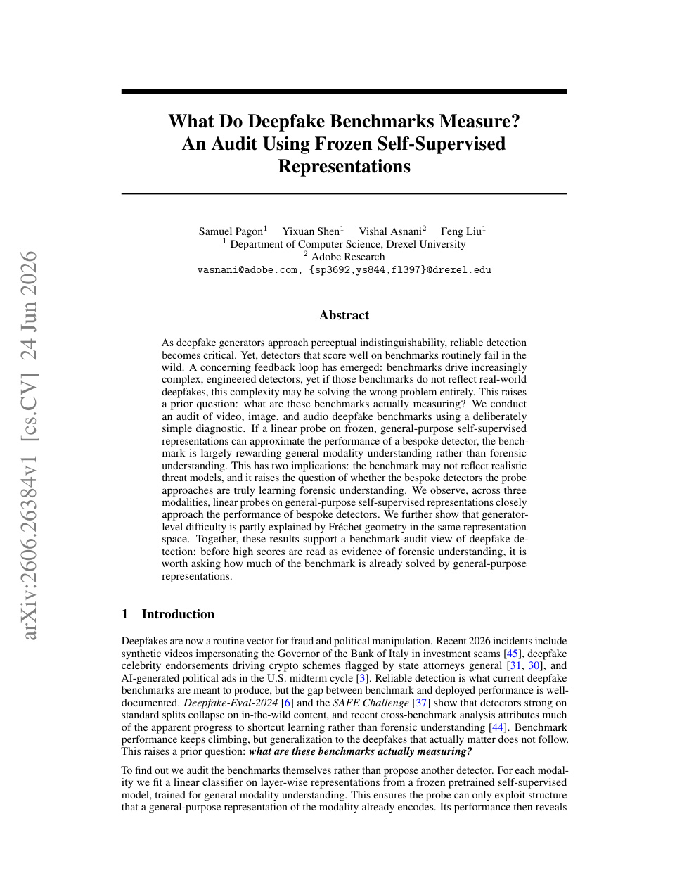

6 月 27 日：ViQ 等视觉表征主线更新
本期聚焦通用视觉表征、视觉语言预训练与视频自监督中最值得跟进的论文，并保留 CCF A/B、OpenReview 与 arXiv 状态线索。
先读 ViQ，因为它直接影响后续视觉 tokenizer、AR/UMM 图像生成和统一离散表征的设计。第二组读 ReasonCLIP-58M、VISE、VIGIL：它们分别从继续预训练、自演化奖励和反事实对齐三个角度解决 VLM 是否真正利用视觉证据。第三组读 JEPA generalization theory、Neural Voxel Dynamics、RECA，用于连接 latent predictive objective、3D/video world model 和理解-生成共享表征。P3 与扫读项只需看方法图、评估设计和是否能转化成自己的 representation diagnostic。
论文索引
| 优先级 | 论文 | 类型 | 相关性 | 一句话理由 |
|---|---|---|---|---|
| P0 | ViQ: Text-Aligned Visual Quantized Representations at Any Resolution | arXiv 新增 + ECCV 2026 | 极高 | 把视觉离散 token 做成可与文本对齐、任意分辨率可用的通用表征。 |
| P0 | ReasonCLIP-58M: Visually Grounded Commonsense Reasoning Supervision for CLIP | arXiv 新增 + ECCV 2026 | 极高 | 把可视觉验证的常识推理监督注入 CLIP，目标是提升通用 VLM backbone 的组合泛化。 |
| P1 | Paying More Attention to Visual Tokens in Self-Evolving Large Multimodal Models | arXiv 新增 + ECCV 2026 | 高 | 直接修正 self-evolving LMM 中“语言先验盖过视觉 token”的表征/注意力失衡。 |
| P1 | Staying VIGILant: Mitigating Visual Laziness via Counterfactual Visual Alignment in MLLMs | arXiv 新增 + ECCV 2026 | 高 | 用 counterfactual visual alignment 缓解 MLLM 视觉懒惰，是 VLM post-training 与视觉 grounding 的强相关工作。 |
| P1 | A Generalization Theory for JEPA-Based World Models | arXiv 新增 | 高 | 给 JEPA world model 建立首个泛化理论，能帮助判断 latent predictive objective 的优势和容量边界。 |
| P1 | Reconstruction Alignment Improves Unified Multimodal Models | arXiv 更新 + ICLR 2026 | 高 | RECA 用理解编码器 embedding 自监督重建来校准统一多模态模型，是“理解-生成”共享表征的重要更新。 |
| P2 | OctoSense: Self-Supervised Learning for Multimodal Robot Perception | arXiv 新增 | 中高 | 机器人场景较垂直，但 late-fusion masked autoencoder 处理异步多模态传感器的方法可迁移。 |
| P2 | Neural Voxel Dynamics: Learning Implicit 3D Physics via Volumetric Feature Advection | arXiv 新增 | 中高 | 把 V-JEPA 特征 lifting 到 3D voxel latent，再做自监督动态预测，连接视频 SSL 与 3D world modeling。 |
| P2 | Ask, Solve, Generate: Self-Evolving Unified Multimodal Understanding and Generation via Self-Consistency Rewards | arXiv 新增 | 中高 | 尝试只用无标签图像，通过内部问答和生成一致性同时改进理解与生成。 |
| P2 | Safe Autoregressive Image Generation with Iterative Self-Improving Codebooks | arXiv 新增 + ICML 2026 | 中高 | 围绕离散视觉 codebook 的自我修复，与视觉 tokenizer 安全性和可控性相关。 |
| P3 | Sketched Linear Contrastive Learning: Approximation, Optimization, and Statistical Scaling | arXiv 新增 | 中 | 线性 contrastive learning 的 sketch/scaling 理论，偏理论但可解释对比学习容量与样本规模。 |
| P3 | Bridging Vision and Language Concepts through Optimal Transport Semantic Flow | arXiv 新增 | 中 | 用 optimal transport 建模 visual patch 到 textual concept 的语义流，适合关注可解释 VLM 表征。 |
| P3 | TOPS: First-Principles Visual Token Pruning via Constructing Token Optimal Preservation Sets for Efficient MLLM Inference | arXiv 新增 | 中 | 训练无关的视觉 token pruning 原则化，对高分辨率 VLM/MLLM 的 token 选择有工程参考。 |
| 扫读 | What Do Deepfake Benchmarks Measure? An Audit Using Frozen Self-Supervised Representations | arXiv 新增 | 中 | 用 frozen self-supervised representations 审计 deepfake benchmark，方法可迁移但任务偏安全评测。 |
主线阅读

ViQ: Text-Aligned Visual Quantized Representations at Any Resolution
极高相关；详见方法、贡献和实验边界。
方法：把视觉离散 token 做成可与文本对齐、任意分辨率可用的通用表征

ReasonCLIP-58M: Visually Grounded Commonsense Reasoning Supervision for CLIP
极高相关；详见方法、贡献和实验边界。
方法：把可视觉验证的常识推理监督注入 CLIP，目标是提升通用 VLM backbone 的组合泛化

Paying More Attention to Visual Tokens in Self-Evolving Large Multimodal Models
高相关；详见方法、贡献和实验边界。
方法：直接修正 self-evolving LMM 中“语言先验盖过视觉 token”的表征/注意力失衡

Staying VIGILant: Mitigating Visual Laziness via Counterfactual Visual Alignment in MLLMs
高相关；详见方法、贡献和实验边界。
方法：用 counterfactual visual alignment 缓解 MLLM 视觉懒惰，是 VLM post-training 与视觉 grounding 的强相关工作

A Generalization Theory for JEPA-Based World Models
高相关；详见方法、贡献和实验边界。
方法：给 JEPA world model 建立首个泛化理论，能帮助判断 latent predictive objective 的优势和容量边界

Reconstruction Alignment Improves Unified Multimodal Models
高相关；详见方法、贡献和实验边界。
方法：RECA 用理解编码器 embedding 自监督重建来校准统一多模态模型，是“理解-生成”共享表征的重要更新

OctoSense: Self-Supervised Learning for Multimodal Robot Perception
中高相关；详见方法、贡献和实验边界。
方法：机器人场景较垂直，但 late-fusion masked autoencoder 处理异步多模态传感器的方法可迁移

Neural Voxel Dynamics: Learning Implicit 3D Physics via Volumetric Feature Advection
中高相关；详见方法、贡献和实验边界。
方法：把 V-JEPA 特征 lifting 到 3D voxel latent，再做自监督动态预测，连接视频 SSL 与 3D world modeling

Ask, Solve, Generate: Self-Evolving Unified Multimodal Understanding and Generation via Self-Consistency Rewards
中高相关；详见方法、贡献和实验边界。
方法：尝试只用无标签图像，通过内部问答和生成一致性同时改进理解与生成

Safe Autoregressive Image Generation with Iterative Self-Improving Codebooks
中高相关；详见方法、贡献和实验边界。
方法：围绕离散视觉 codebook 的自我修复，与视觉 tokenizer 安全性和可控性相关

Sketched Linear Contrastive Learning: Approximation, Optimization, and Statistical Scaling
中相关；详见方法、贡献和实验边界。
方法：线性 contrastive learning 的 sketch/scaling 理论，偏理论但可解释对比学习容量与样本规模

Bridging Vision and Language Concepts through Optimal Transport Semantic Flow
中相关；详见方法、贡献和实验边界。
方法：用 optimal transport 建模 visual patch 到 textual concept 的语义流，适合关注可解释 VLM 表征

TOPS: First-Principles Visual Token Pruning via Constructing Token Optimal Preservation Sets for Efficient MLLM Inference
中相关；详见方法、贡献和实验边界。
方法：训练无关的视觉 token pruning 原则化，对高分辨率 VLM/MLLM 的 token 选择有工程参考

What Do Deepfake Benchmarks Measure? An Audit Using Frozen Self-Supervised Representations
中相关；详见方法、贡献和实验边界。
方法：用 frozen self-supervised representations 审计 deepfake benchmark，方法可迁移但任务偏安全评测